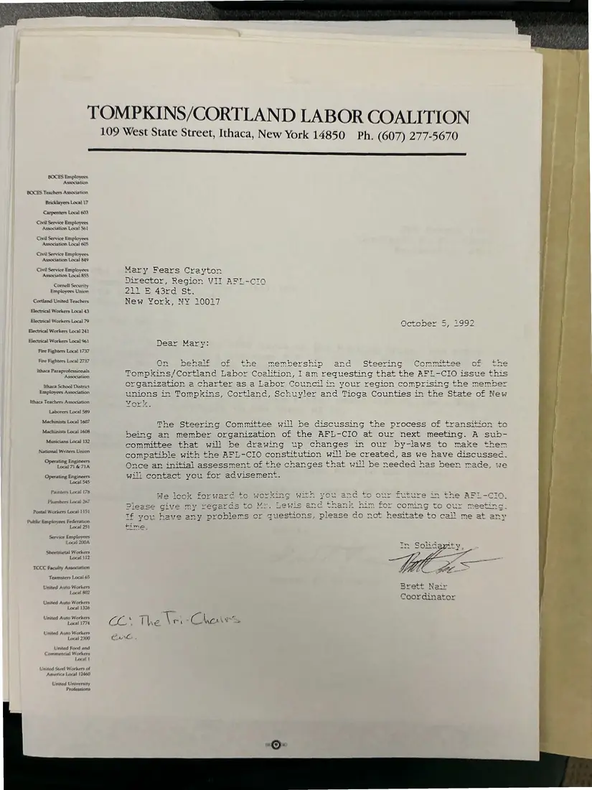
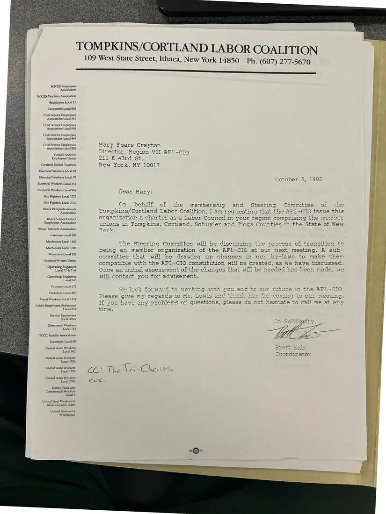
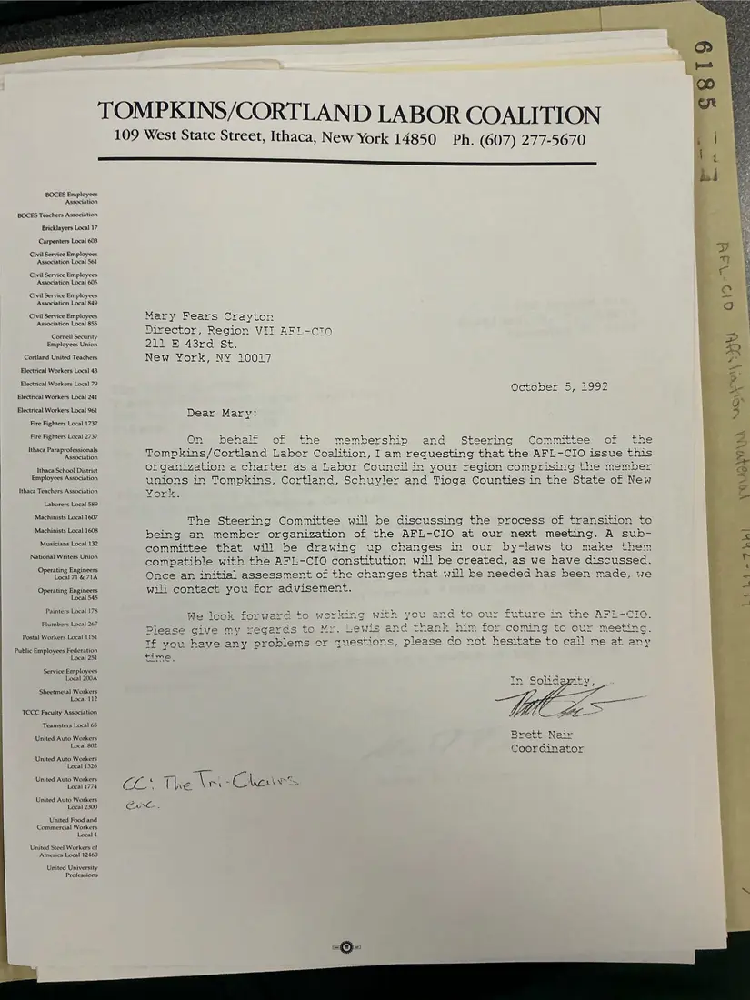
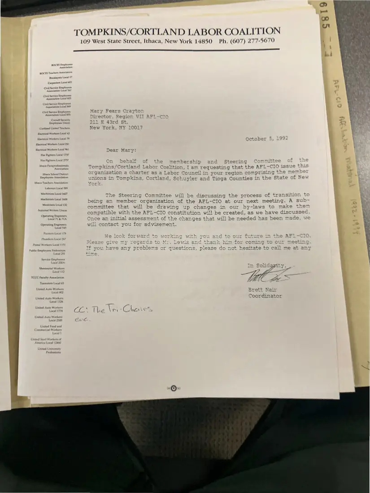
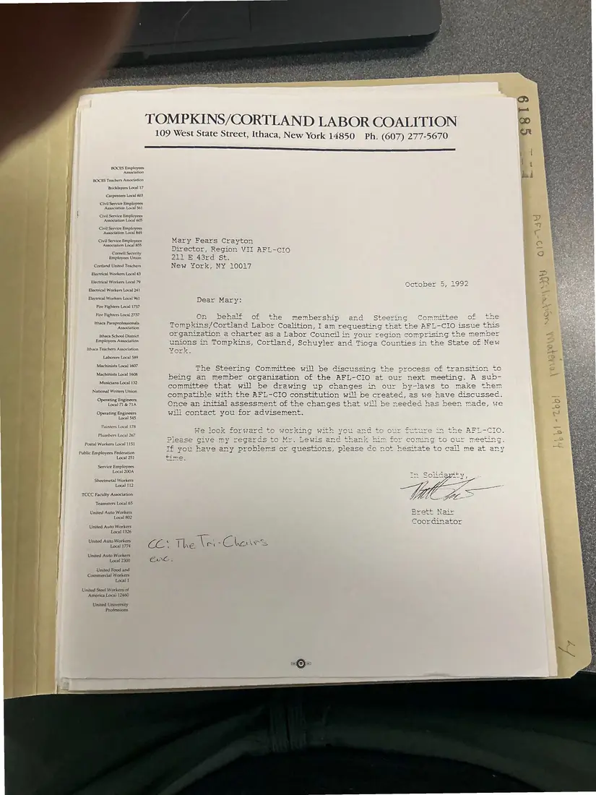

Letter, 1 page, plus 4 additional copies
Brett Nair to Mary Fears Crayton, requesting an AFL-CIO labor council charter
October 5, 1992
On behalf of the membership and Steering Committee, the coordinator asks the AFL-CIO to charter the Tompkins-Cortland Labor Coalition as a labor council for Tompkins, Cortland, Schuyler, and Tioga counties. A subcommittee would draft bylaws compatible with the AFL-CIO constitution. Five copies were photographed.
Download or cite this itemPages


(open zoom view)Read the page text (machine-read, mostly readable)
This text was generated automatically from the photograph and has not been corrected. The image is the authoritative record.
TOMPKINS/CORTLAND LABOR COALITION 109 West State Street, Ithaca, New York 14850 Ph. (607) 277-5670 esl sss sets BOCES Employees Association BOCES Teachers Association Bricklayers Local 17 Carpenters Local 603 Civil Service Employees Association Local S61 Civil Service Employees Association Local 605 Civil Service Employees Association Local 849 Civil Service Employees Association Local 855 Cornell Security Employees Union Cortland United Teachers Electrical Workers Local 43 Electrical Workers Local 79 Electrical Workers Local 241 Hlectrical Workers Local 961 Fire Fighters Local 1737 Fire Fighters Local 2737 ithaca Paraprofessionals Association ithaca School District Employees Association Ithaca Teachers Association Laborers Local 589 Machinists Local 1607 Machinists Local 1608 Musicians Local 132 National Writers Union Opexating Engineers Local 71 & 71A Operating Engineers Local 545 Painters Local 176 Plumbers Local 267 Postal Workers Loca} 1151 Public Employees Federation Local 251 Service Employees Local 200A Sheetmetal Workers Local 112 TCC Faculty Association Teamsters Local 65 United Auto Workers Local 202 United Auto Workers Local 1326 United Auto Workers Local 1774 United Auto Workers Local 200 United Food and Commercial Workers Local 5 United Steel! Workers of America Local 1240) United University Professions Mary Fears Crayton Director, Region VII AFL-cIo 211 Ee 43rd._ St. York, NY 10027 October 5, 1992 Com mittaa DE poneee Se ve On behalf of the membership and Tompkins/Cortland Labor Coalition, Iam requesting that fad ~Ho esiS he AFL-CIO issue this organization a charter as a Labor Councilin your region comprising the member unions in Tompkins, Cortland, Schuyler and Tioga Counties in the State of New The Steering Committee will be discussing the process of transition to being an member organization of the AFL-CIO at our next meeting. A sub- committee that will be drawin up changes in our by-laws to make them compatible with the AFL-CIO constitution will be created, as we have discussed. Once an initial assessment of the changes that will be needed has been made, will contact you for advisement. We look forward to working with you and to our future in the AFL-CIO Wee £ Please Give my regards to Mr. Lewis an em Se et —= vest S22 — (ey) er = AD ee Oe ee wae pe Ne he eee = aoe hank him for coming to our meeting. Tf you have any problems or questions, please do not hesitate to call me at any rime Tr Soha ban Brett Nair Coordinator CL. The (i Ge ONE -
Additional copies
The same document was photographed more than once. These copies may carry different handwriting, stamps, or paper.


(open zoom view)Read the page text (machine-read, contains errors)
This text was generated automatically from the photograph and has not been corrected. The image is the authoritative record.
TOMPKINS/CORTLAND LABOR COALITION 109 West State Street, Ithaca, New York 14850 Ph. (607) 277-5670 ———— esses ehssnesssessspesusissensnenest BOCES Employees Association BOCES Teachers Association Bricklayers Local 17 Carpenters Local 603 Civil Service Employees Association Local S61 Civil Service Employees Association Local 605 Civil Service Employees Association Local 849 Civil Service Employees Mar y Fears C rayton oe nrector, Region VII AFIL-CtIo Employees Union BE 43rd St. Cortland United Teachers ew York, NY 10017 Electrical Workers Local 43 Hlectrical Workers Local 79 Electrical Workers Local 241 Electrical Workers Local 961 Dear Mar vv: Fire Fighters Local 1737 Fire Fighters 7 : eS eran On behalf of the membership and Steering Committee of the Ithaca P. fessionals : Ms rt tee mcLes Ge gee Tompkins/Cortland Labor Coalition, Iam requesting that the AFL-CIO issue this pre Sa Daes organization a charter as a Labor Council in your region comprising the member = ss aL meet ap ois es oe A Pregnant unions in Tompkins, Cortland, Schuyler and Ticga Counties in the State of New Ithaca Teachers Association Vari Laborers Local 589 The Steering Committee will be discussing the process of transition tc being an member organization of the AFL-CIO at our next meeting. A sub- eiee 8 28 committ 2 that will be drawin up changes in our dy-laws to make them ae compatible with the AFL-CIO constitution will be createc, as we have discussec. Local 71 & 714 Once an initial assessment of the changes that will be needed has been made, we ee will contact you for advisement. Machinists Local 1607 Machinists Local 1608 Musicians Local 132 Painters Local 178 os = = > x co eee ies * ; = We look Forwarc to wer aNOorO ORT Cnc ure mas Plumbers Local 267 =e 2 & 2 Re a ys c . MCaseliGive any 2eGarcs eau! 220 ¢ aim for coming to Postal Workers Local 1151 Tf you have any problems o S, Go not hesitate to Public Employees Federation z Local 251 time Service Employees Local 200A Sheetmetal Workers Local 112 TOCCC Faculty Association Teamsters Local 65 United Oe Ree R rett N <= ca Ae = ys United Auto Workers _oorqcinator Local 1326 United Auto Workers Local 1774 United Auto Workers Local 2300 United Food and Commercial Workers Local 1 United Steel Workers of America Local 12460 United University Professions


(open zoom view)Read the page text (machine-read, mostly readable)
This text was generated automatically from the photograph and has not been corrected. The image is the authoritative record.
109 West State Street, Ithaca, New York 14850 Ph. (607) 277-5670 ees BOCES Employees Association BOCES Teachers Association Bricklayers Local 17 Carpenters Local 603 Civil Service Employees Association Local $61 Civil Service Employees Association Local 605 Civil Service Employees Association Local 849 Civil Service Employees Association Local 855 Comell Security Employees Union Cortland United Teachers Electrical Workers Local 43 Electrical Workers Local 79 Electrical Workers Local 241 Electrical Workers Local 961 Fire Fighters Local 1737 Fire Fighters Local 2737 Ithaca Paraprofessionals Association Ithaca School District Employees Association Ithaca Teachers Association Laborers Local 589 Machinists Local 1607 Machinists Local 1608 Musicians Local 132 National Writers Union Operating Engineers Local 71 & 71A Operating Engineers Local 545 Painters Local 178 Plumbers Local 267 Postal Workers Local 1151 Public Employees Federation Local 251 Service Employees Local 200A Sheetmetal Workers Local 112 TCCC Faculty Association Teamsters Local 65 United Auto Workers Local 802 United Auto Workers Local 1326 United Auto Workers Local 1774 United Auto Workers Local 2300 United Food and Commercial Workers Local 1 United Steel Workers of America Local 12460 United University Professions Mary Fears Crayton Director, Region VII AFL-cIo0 Cia EAS da St. New York, NY 10017 October 532992 Dear Marv: On behalf of the membership and Steering Committee of the Tompkins/Cortland Labor Coalition, Iam requesting that the AFL-CIO issue this organization a charter as a Labor Councilin your region comprising the member unions in Tompkins, Cortland, Schuyler and Tioga Counties in the State of New Monk. The Steering Committee will be discussing the process of transition to being an member organization of the AFL-CIO at our next meeting. A sub- committee that will be drawing up changes in our by-laws to make them compatible with the AFL-CIO constitution will be created, as we have discussed. Once an initial assessment of the changes that will be needed has been made, we will contact you for advisement. We look forware to working with you and to our future in the AFL-CIO. Please cive my xegards to Mr. Lewis and.thank him for coming to our meeting. TE you have any problems or questions, please do not hesitate to cail me at any time, Tn Solidarity Brett Nair Coordinator CL The In : Chaves est UNG.


(open zoom view)Read the page text (machine-read, many errors)
This text was generated automatically from the photograph and has not been corrected. The image is the authoritative record.
TOMPKINS/CORTLAND LABOR COALITION
109 West State Street, Ithaca, New York 14850 Ph, (607) 277-5670
{ Cortland Lites Teachers New York, NY 10017
j d Plevtrical Workers Lacel 43
’ q aw. an Ratahber & 199
y 4 j Elextrcal Workers Loos Oete der 4 &
F Flecteica? Workers Locat 2
i i Flectecal Workers Loca 3 Dear Mary:
| ; | On behalf of +¢ = membership and Steering Carmrmittes § é
q Tompkins/Cortland Lak wey ition, I am requesting that th
hace Schoo! Di organization a charter as a Labor Council in your region co J
| ne unions in Tompkins, Cort Si nd, Schuyler and Tioga Counties in the State of New
7 thace Teacher Associatior Vor &
a Laborers Local $89
wnpomscrsiatincshines The Steering Committee will be discussing the process of transito
Net Lae oat
being an member organization of the AFL-CIO at our next meeting. A sub-
Musiktars Local 132
; committee that will be drawing up changes in our by-laws to make
Natemal Wisters Union
compatible with the AFL-CIO constitution will he created, as we have discussec.
Operating Engineers ~
ste : + i B on te ae “ue made, Wwe
Local 72 f& FIA Once an initial assessment of the chang ges that wi] be nee aded has been ce 4€
e q Operating Ez wilt contact you ror advisement,
Loxal 543
Painters Lax z) - sy: “ue 2 = 4 Siar : bic ROT =
warc to work' ne with vou and ta our Foture in the APT -(
5 — WY Came ‘ as orvtek Westeue. We Shae a Rt Na Nene Nek te Ne Ne ee week Le pate Nee
Phumbors Local 4 1 : ; a> en :
; an EGS to MY. Lewis anc Snaenk Bim for COMING CO OLE Tees:
[ Warners Local 1151 : :
( roblems ar suestions please Aan not hacitate to mail me at
P Sg we YOU 22GS Gee F Saat ie SumSSiawWedea, PSSaol hy EOS hears 8 2 ee ers fe GS at
4 q Ni hOMieeS MAleTation
Lacal 241 4 1
x re x ‘
, shewtnsctal Workers . i
‘a Local 112 a / p
TOCC Faculty Association
Teamsters Lacal 6S
i a United Auto Workers Brett Nair
Worker SLE Wet
) 4 Lacal 802 rm Bs Ao Toye
j ~ OOF CON aAlOr
, a United Auto Workers
i Lecal 1226
wy United Auto Workers
f a 7
; | Laval 1774
Ureted Aute Workers
Local 2600 Card
United food and
Commercial Workers
Local
United University
Professions

(open zoom view)Read the page text (machine-read, mostly readable)
This text was generated automatically from the photograph and has not been corrected. The image is the authoritative record.
TOMPKINS/CORTLAND LABOR COALITION 109 West State Street, Ithaca, New York 14850 Ph. (607) 277-5670 BOCES Employees Association BOCES Teachers Association Bricklayers Local 17 Carpenters Local 603 Civil Service Employees Association Local 561 Civil Service Employees Association Local 605 Civil Service Employees Association Local 849 Civil Service Employees Association Local 855 Cornell Security Employees Union Cortland United Teachers Electrical Workers Local 43 Electrical Workers Local 79 Electrical Workers Local 241 Electrical Workers Local 961 Fire Fighters Local 1737 Fire Fighters Local 2737 Ithaca Paraprofessionals Association Ithaca School District Employees Association Ithaca Teachers Association Laborers Local 589 Machinists Local 1607 Machinists Local 1608 Musicians Local 132 National Writers Union Operating Engineers Local 71 & 71A Operating Engineers Local 545 Painters Local 178 Plumbers Local 267 Postal Workers Local 1151 Public Employees Federation Local 251 Service Employees Local 200A Sheetmetal Workers Local 112 TCCC Faculty Association Teamsters Local 65 United Auto Workers Local 802 United Auto Workers Loca] 1326 United Auto Workers Local 1774 United Auto Workers Local 2300 United Food and Commercial Workers Local 1 United Steel Workers of America Local 12460 United University Professions Mary Fears Crayton Director, Region VII AFL-cto Dir 211 E 43rd St. New York, NY 10017 October 5, 1992 Dear Mary: On behalf of the membership and Steerinc Committee of the : L teering Committee Be Tompkins/Cortland Labor Coalition, I am requesting thet the AFL-CIO issue this ilin your region comprising the member organization a charter as a Labor Coun unions in Tompkins, Cortland, Schuyler and Tioga Counties in the State of New The Steering Committee will be discussing the process of transition ¢ being an member organization of the AFL-CIO at our next meeting. A sub- committee that will be drawing up changes in our by-laws to make them compatible with the AFL-CIO constitution will be created, as we have discussed. Once an initial assessment of the changes that will be needed has been made, we will contact you for advisement. ied ei a = Bue he i : S Ei We look forwera to working with you amd fo our Euture im the Ari-Cio. ZEGanas col Mea ewis and thank bim for coming to GUL. meeting. PREC HS — Diea 7 \V ease give my h not hesitate to call me at any If you have any pr SLI at oe AA + As |
See something wrong, or recognize a person or event? Send a correction. If you hold rights in this item or think it should not be public, write to the same address.